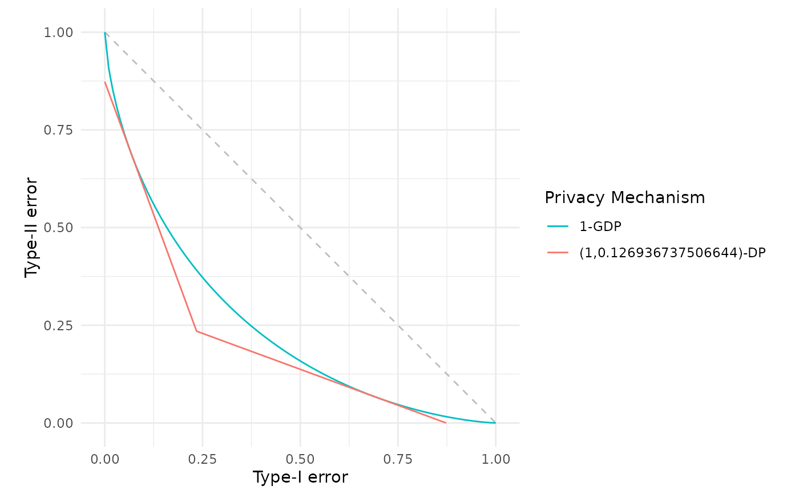
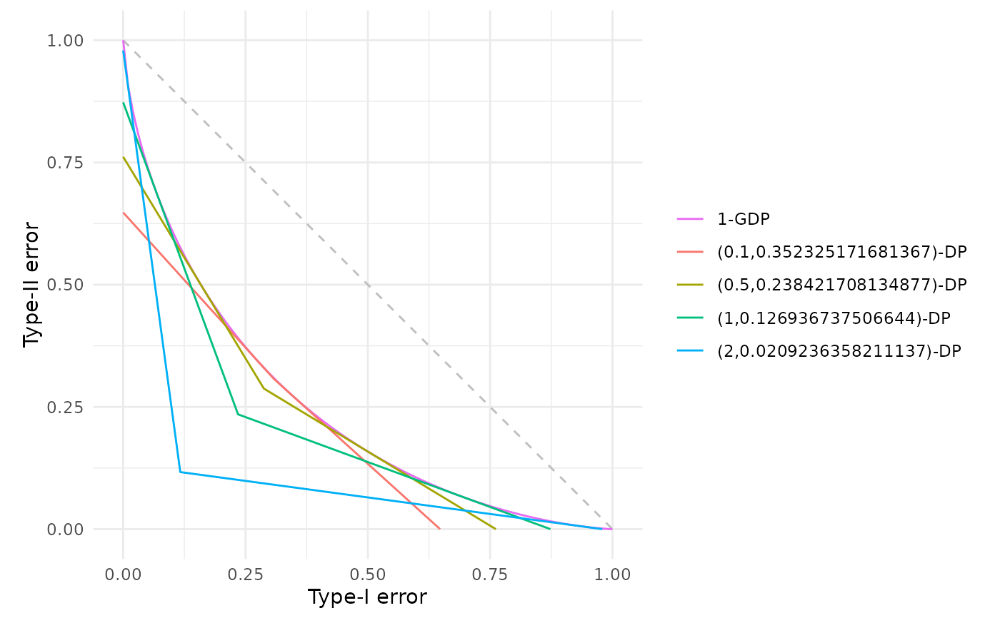

Convert Gaussian differential privacy to classical (epsilon, delta)-differential privacy
Source:R/gdp_to_epsdelta.R
gdp_to_epsdelta.RdComputes the exact \((\varepsilon, \delta)\)-differential privacy guarantee corresponding to a given \(\mu\)-Gaussian differential privacy (GDP) mechanism for a specified \(\varepsilon\) value. This conversion is based on the closed-form relationship established in Corollary 1 (p.16) of Dong et al. (2022), which provides the tightest possible \(\delta\) for any given \(\varepsilon\) and \(\mu\).
Arguments
- mu
Numeric scalar specifying the \(\mu\) parameter of the Gaussian differential privacy mechanism. Must be non-negative.
- epsilon
Numeric scalar specifying the target \(\varepsilon\) privacy parameter. Must be non-negative. The function computes the minimal \(\delta\) such that \(\mu\)-GDP implies \((\varepsilon, \delta)\)-DP.
- dp
Optional integer specifying the number of decimal places for rounding the computed \(\delta\) value. If provided, \(\delta\) is rounded up to ensure the privacy guarantee remains valid. If
NULL(default), the exact value is returned without rounding. Must be a positive integer if specified.
Value
A \((\varepsilon, \delta)\)-DP trade-off function object (see epsdelta()) of class c("fdp_epsdelta_tradeoff", "function").
Details
While GDP provides a complete characterisation of privacy through the trade-off function, classical \((\varepsilon, \delta)\)-differential privacy remains the most widely recognised privacy definition in both theoretical and applied research. This function enables practitioners to translate GDP guarantees into the more familiar \((\varepsilon, \delta)\)-DP language.
For a mechanism satisfying \(\mu\)-GDP, the exact \((\varepsilon, \delta)\)-DP guarantee is given by Corollary 1 of Dong et al. (2022): $$\delta(\varepsilon, \mu) = \Phi\left(-\frac{\varepsilon}{\mu} + \frac{\mu}{2}\right) - e^\varepsilon \Phi\left(-\frac{\varepsilon}{\mu} - \frac{\mu}{2}\right)$$ where \(\Phi\) denotes the cumulative distribution function of the standard Normal distribution. This was a result originally proved in Balle and Wang (2018).
References
Balle, B. and Wang, Y-X. (2018). “Improving the Gaussian Mechanism for Differential Privacy: Analytical Calibration and Optimal Denoising”. Proceedings of the 35th International Conference on Machine Learning, 80, 394–403. Available at: https://proceedings.mlr.press/v80/balle18a.html.
Dong, J., Roth, A. and Su, W.J. (2022). “Gaussian Differential Privacy”. Journal of the Royal Statistical Society Series B, 84(1), 3–37. doi:10.1111/rssb.12454 .
See also
gdp() for constructing Gaussian differential privacy trade-off functions,
epsdelta() for directly constructing \((\varepsilon, \delta)\)-DP trade-off functions,
est_gdp() for estimating \(\mu\) from empirical trade-off functions,
est_epsdelta() for estimating \((\varepsilon, \delta)\) from empirical trade-off functions,
fdp() for plotting and comparing trade-off functions.
Examples
# Convert mu = 1 GDP to (epsilon, delta)-DP with epsilon = 1
dp_guarantee <- gdp_to_epsdelta(mu = 1.0, epsilon = 1.0)
dp_guarantee
#> (ε, δ)-Differential Privacy Trade-off Function
#> Parameters:
#> ε = 1
#> δ = 0.126936737506644
# Round delta to 6 decimal places for reporting
dp_rounded <- gdp_to_epsdelta(mu = 1.0, epsilon = 1.0, dp = 6)
dp_rounded
#> (ε, δ)-Differential Privacy Trade-off Function
#> Parameters:
#> ε = 1
#> δ = 0.126937
# Compare the original GDP with its (epsilon, delta)-DP representation
fdp(gdp(1.0),
gdp_to_epsdelta(mu = 1.0, epsilon = 1.0),
.legend = "Privacy Mechanism")

# Explore how delta varies with epsilon for a fixed mu
mu_fixed <- 1.0
epsilons <- c(0.1, 0.5, 1.0, 2.0)
res <- fdp(gdp(mu_fixed))
for (eps in epsilons) {
res <- res+fdp(gdp_to_epsdelta(mu = mu_fixed, epsilon = eps))
}
res
